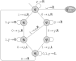

Reminder about browser check – you should see “OK” in script here: \({\mathcal O}{\mathcal K}\)
(Textbook, Exercise 3.2 parts b and d) [How to “grade” your work: The sequence of configurations must be exactly as shown, but the arrows are optional. I like the arrows because it indicates the “flow”, but just a list (like the book does in Example 3.9) is OK as long as the order is clear. Grade each part out of 5 points, with 1/2 point off for each incorrect configuration. ]
Part b: Configurations for 1#1
\(q_1\texttt{1#1} \rightarrow\) \(\texttt{x}q_3\texttt{#1} \rightarrow\) \(\texttt{x#}q_5\texttt{1} \rightarrow\) \(\texttt{x}q_6\texttt{#x} \rightarrow\) \(q_7\texttt{x#x} \rightarrow\) \(\texttt{x}q_1\texttt{#x} \rightarrow\) \(\texttt{x#}q_8\texttt{x} \rightarrow\) \(\texttt{x#x}q_8\texttt{␣} \rightarrow\) \(q_{\textrm{accept}}\)
Part d: Configurations for 10#11
\(q_1\texttt{10#11} \rightarrow\) \(\texttt{x}q_3\texttt{0#11} \rightarrow\) \(\texttt{x0}q_3\texttt{#11} \rightarrow\) \(\texttt{x0#}q_5\texttt{11} \rightarrow\) \(\texttt{x0}q_6\texttt{#x1} \rightarrow\) \(\texttt{x}q_7\texttt{0#x1} \rightarrow\) \(q_7\texttt{x0#x1} \rightarrow\)
\(\texttt{x}q_1\texttt{0#x1} \rightarrow\) \(\texttt{xx}q_2\texttt{#x1} \rightarrow\) \(\texttt{xx#}q_4\texttt{x1} \rightarrow\) \(\texttt{xx#x}q_4\texttt{1} \rightarrow\) \(q_{\textrm{reject}}\)
(Textbook, Exercise 3.8b) [How to “grade” your work (8 points): There two common solutions for this part – the one below is a slight modification of the solution to the “same number of 0’s and 1’s” TM that we designed in class. This solution is also much easier to turn into a fully-specified TM state diagram. For grading: Trace the following strings through the steps to make sure it works correctly on each (1 points each): \(\varepsilon\), 001, 100, 010 should all be accepted. 0, 01, 110, and 0001 should not.
The other solution makes separate passes for each symbol – one pass to cross off a 1, then rewind; a pass to cross off a 0, then rewind; and another pass to cross off a 0, then rewind (the passes can be done in any order). While this works, and is reasonably straightforward to state at the implementation level, when turning it into a state diagram for the next question the “rewind” part is tricky — there’s no way for a TM to detect the left end of the tape, so you need to mark the first tape symbol.]
\(M=\) "On input \(w\), a binary string:
1. Scan to the right until you find a \(\texttt{0}\), \(\texttt{1}\), or blank. If blank, accept.
2. If the bit you found is a \(\texttt{0}\) mark it off with \(\texttt{x}\) and scan to the right until you find a \(\texttt{0}\), \(\texttt{1}\) or blank. If it’s a blank, reject. If you found a \(\texttt{0}\) mark it off with \(\texttt{y}\) and keep scanning to the right until you find a \(\texttt{1}\) or blank. If it’s a blank, reject. Otherwise, it’s a \(\texttt{1}\), so mark it off with \(\texttt{y}\) and scan back left until you find an \(\texttt{x}\). Then move right and go to step 1.
3. If the bit you found in step 1 was a \(\texttt{1}\), mark it off with \(\texttt{x}\) and scan to the right until you find a \(\texttt{0}\) or blank. If it’s a blank, reject. If \(\texttt{0}\), mark it off with \(\texttt{y}\) and keep scanning to the right until you find a \(\texttt{0}\) or blank. If it’s a blank, reject. If \(\texttt{0}\), mark it off with \(\texttt{y}\) and scan back left until you find an \(\texttt{x}\). Then move right and go to step 1."
[How to “grade” your work: To grade (8 points): Use the same test strings as in grading the previous question, with one point for each correct result. ]
The following state diagram is a full definition of the implementation level description in the previous question. Note that the states can be given meanings: \(q_1\) means you are looking for twice as many 0’s as 1’s in the non-marked-off symbols; \(q_2\) means you need to find two 0’s to the right; \(q_3\) means you need to find a 0 and a 1 to the right; \(q_4\) means you need a 0 to the right; and \(q_5\) means you need a 1 to the right. \(q_6\) rewinds to the rightmost \(\texttt{x}\) symbols – everything to the left of that must be marked off with either an \(\texttt{x}\) or a \(\texttt{y}\).

(Textbook, Exercise 3.11) [How to “grade” your work (10 points): There are multiple, quite different, solutions to this problem. Study the solution below first and make sure you understand it, but then you can consider alternatives. For example, instead of shifting the tape to the right as needed, you can use a second tape to store symbols “to the left” of the starting position, with the state encoding whether you are on the left part of the tape or the right. You can then refer back to the textbook’s result that a two-tape TM has the same computational power as a single-tape TM. You do need a few details (for example, transitions on the “left side” of the tape switch directions, so a transition that would move left now moves right on the second tape). You also need to handle when you transition from the left part of the tape to the right part (or vice-versa). You will need to recognize the origin of the tape, so you’ll still need the same marking trick as in the solution below. There are probably other creative solutions, but these are the main two. For a 10 point grading, the right overall structure and idea is worth 7 points. Details (such as marking the left end of the tape, etc.) are worth 1 point each. ]
Given a Turing Machine \(M\) with a doubly-infinite tape, we create a simulator using a standard one-way-infinite tape that shifts the entire tape to the right one position if it ever tries to move left from the leftmost tape cell – this effectively extends the tape as far to the left as needed. There are two slightly subtle issues that have to be addressed for this to work.
First, to shift the tape to the right, you have to be able to tell when you reach the rightmost non-blank tape cell. The first idea is to stop shifting when you see a blank — however, since \(\texttt{␣}\) is part of \(M\)’s tape alphabet, \(M\) could in fact write a \(\texttt{␣}\) in the middle of the tape, so this is an unreliable “right end marker.” To correct for this, we add a “written space” symbol that we’ll denote with a tilde: \(\texttt{~}\). Now every transition of \(M\) that would write a space writes \(\texttt{~}\) instead, and transitions otherwise treat \(\texttt{␣}\) and \(\texttt{~}\) the same. Since \(M\) no will never write a \(\texttt{␣}\), the blank is now a valid end-of-tape marker.
Second, \(S\) needs to be able to recognize the left end of the tape. To do this, we make marked versions of all input symbols (including the new \(\texttt{~}\) symbol). Then we start our simulation by marking the leftmost symbol: so if the first symbol on the tape is \(\texttt{x}\) then we overwrite it with \(\dot{\texttt{x}}\).
With these two ideas, we two ideas we can describe the simulator \(S\).
\(S=\) "On input \(w\in\Sigma^*\):
1. Overwrite the current symbol with its “dotted version” and return to the first position on the tape.
2. Perform the same moves as \(M\), except:
If \(M\) would write a blank, instead write \(\texttt{~}\);
If \(M\) would move left and the current symbol is a dotted version (meaning you’re at the left end of the tape), write a dotted \(\texttt{~}\) in the leftmost position and shift all tape symbols to the right one position (writing only non-dotted symbols) until you reach a \(\texttt{␣}\). Then rewind to the dotted symbol and move to the right one position (to the old first symbol). Now you can do the “move left” transition.
If neither of the previous conditions are met, then just do the transition from \(M\), overwriting a dotted symbols with a dotted symbol, and non-dotted symbols with non-dotted symbols.
Simulator \(S\) performs the same sequence of state transitions (simulated) as \(M\), making additional space on the left as needed. This accurately simulates a TM with a doubly-infinite tape, so the languages recognized by TMs with doubly-infinite tapes is just the class of Turing-recognizable languages.